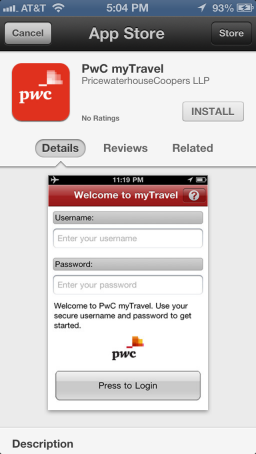

By nature, frequent business travelers are busy individuals....the last thing they want to do in addition to their core job responsibilities, is to track their location and activities using a time consuming process. In addition, they may not have an understanding of the compliance risks related to global commerce and frequent business. We observed very early in the mobility shift to frequent business travelers, that a successful tracking solution needs to be accessible and easy to use for the traveler, while also providing them with flexible alternatives for how they prefer to provide their travel details.
Depending on the tracking method selected, there are varying degrees of traveler participation required. For example, if automated feeds from other systems are used, travelers have the ability to validate that the data collected is accurate. If the sole use of corporate expense or travel systems as a data source is not appropriate, additional responsibilities are required of your travelers.
myTravel, as we call it, is where travelers choose their desired tracking preferences, selecting from a range of options. They can choose to either automatically track and record their location through their mobile devices or laptop, or to manually update a mobile or a web-based calendar on the myTravel site.
While there is flexibility to allow them to choose their preference, the ultimate decision rests with your organization. So, if you�d like to require all travelers to be automatically tracked through corporate issued mobile device, the solution can be configured accordingly. myTravel also helps to educate travelers on the compliance risks associated with global commerce and frequent business travel. This is delivered through interactive, rich multimedia that can be customized to those messages that are most important to your organization.
By nature, frequent business travelers are busy individuals. The last thing they want to do in addition to their core job responsibilities, is to track their location and activities using a time consuming process. In addition, they may not have an understanding of the compliance risks related to global commerce and frequent business. We observed very early in the mobility shift to frequent business travelers, that a successful tracking solution needs to be accessible and easy to use for the traveler, while also providing them with flexible alternatives for how they prefer to provide their travel details.
Depending on the tracking method selected, there are varying degrees of traveler participation required. For example, if automated feeds from other systems are used, travelers have the ability to validate that the data collected is accurate. If the sole use of corporate expense or travel systems as a data source is not appropriate, additional responsibilities are required of your travelers.